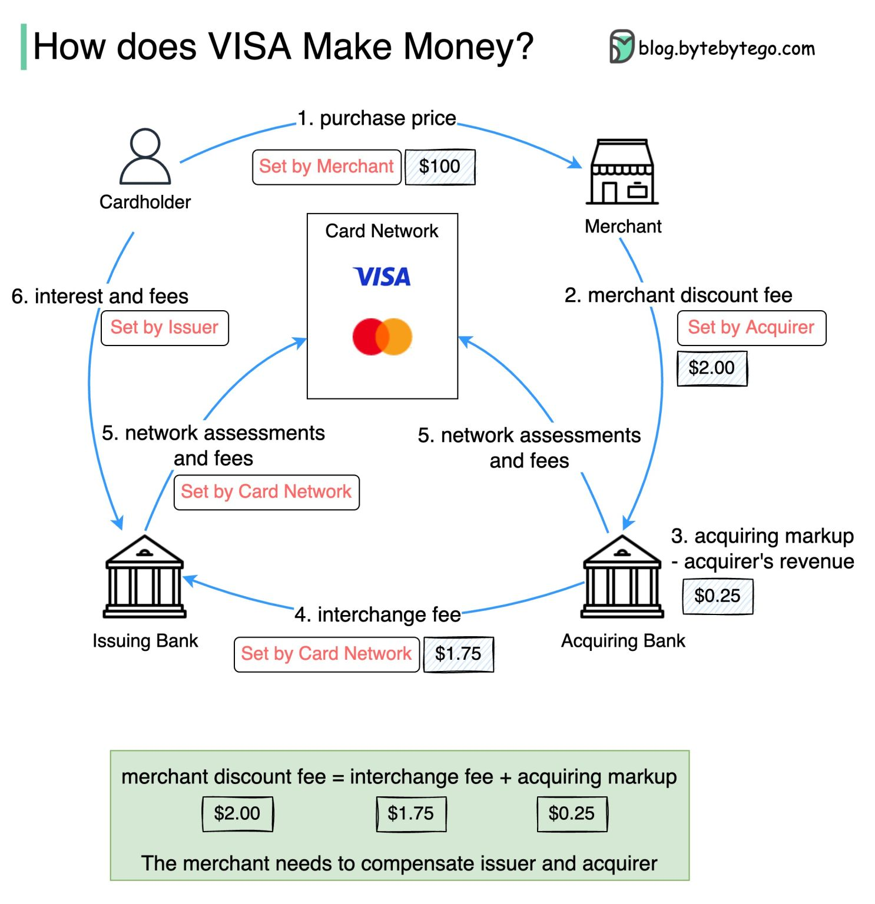
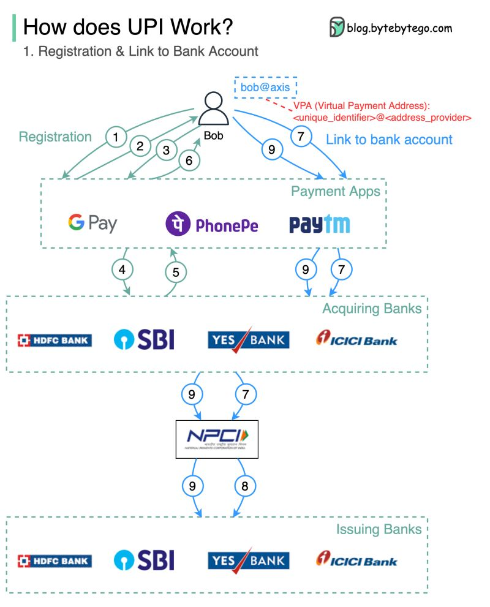
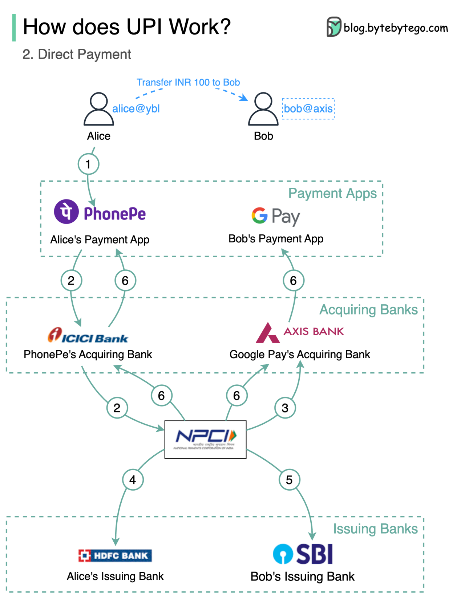

Designing a Payment System
Money is the one domain where "eventually consistent and probably correct" is a resignation letter — how to build a ledger that never loses, double-counts, or invents a cent.
In this lesson
- Step 1: Requirements & scope
- Step 2: Scale & non-functional targets
- Step 3: The double-entry ledger
- Step 4: Idempotency & exactly-once
- Step 5: End-to-end payment flow
- Step 6: The dual-write problem & the outbox
- Step 7: Reconciliation with PSPs
- Step 8: Consistency choices & failure modes
- Step 9: PCI & security
- Principal-level mastery check
Step 1: Requirements & scope
A "payment system" is an overloaded phrase. Pin the scope first. The classic problem is the money-movement core: a service that accepts a request to move funds, talks to one or more external Payment Service Providers (PSPs) such as Stripe, Adyen, or a card network, records the result in an internal ledger, and notifies downstream systems. We are not building a card network or an acquiring bank; we are the orchestration and accounting layer on top of one.
Functional requirements:
- Accept a pay-in (customer charged) and pay-out (merchant/seller credited) request.
- Integrate with multiple PSPs, route a payment to the right one, and handle their asynchronous webhooks.
- Maintain an internal ledger that is the single source of truth for every balance.
- Support refunds, reversals, and disputes/chargebacks.
- Reconcile internal records against the PSP's settlement reports daily.
Step 2: Scale & non-functional targets
Get the orders of magnitude on the table so you can justify architectural choices. A mid-to-large processor:
- Volume: ~10 000 payments/sec peak, ~1 000/sec average. Tens of millions of transactions/day.
- Latency: the synchronous portion (accept, validate, persist intent) under ~200 ms p99. The actual PSP authorization is often seconds and is best modeled asynchronously.
- Durability: zero tolerance for lost committed writes. This forces synchronous replication and CP behavior — never ack a payment that isn't durably committed to a quorum. See CAP Theorem and Replication Deep Dive.
- Retention: ledger entries are kept for 7–10 years for regulatory/audit purposes — append-only and effectively infinite-growth, so partitioning and cold storage matter.
Step 3: The double-entry ledger
The heart of the system is the ledger, and the single most important design decision is to model it as a double-entry, append-only accounting system — the same invariant banks have used for centuries.
In double-entry bookkeeping, every transaction is recorded as a set of postings (debits and credits) across accounts, and the postings of a single transaction must sum to zero. Money is never created; it only moves between accounts. This gives you a checkable invariant: at any instant, the sum of all postings in the system is exactly zero, and the sum of postings to any account equals its balance.
Core schema
accounts
account_id PK
type asset | liability | revenue | ...
currency ISO-4217 (no mixed-currency accounts)
-- balance is DERIVED, not stored authoritatively
transactions -- one business event (a "transfer")
txn_id PK (UUID/ULID)
idempotency_key UNIQUE
status pending | posted | failed
created_at
postings -- the immutable, append-only entries
posting_id PK
txn_id FK
account_id FK
direction DEBIT | CREDIT
amount BIGINT -- minor units (cents), NEVER float
created_at
-- INVARIANT: SUM(signed amount) over a txn_id = 00.1 + 0.2 != 0.3 in IEEE-754, and rounding drift is a fraud-audit nightmare. Store integer minor units (cents, satoshis) or a fixed-precision decimal, and keep currency on the account so you never silently add USD to EUR.Why append-only
Postings are immutable. You never UPDATE or DELETE a posting. A correction is a new, compensating transaction (e.g. a reversal that credits what was debited). This makes the ledger an audit log by construction — you can replay it to reconstruct any balance at any point in time, and an auditor can verify there are no silent edits. This is exactly the event-sourcing pattern (see Event-Driven Architecture): the postings are the events, balances are the materialized projection.
For balances, the principal-level nuance is the read pattern. Recomputing a balance by summing millions of postings on every read is unacceptable. The standard answer is a balance snapshot: periodically (or per-N-postings) write a checkpoint row holding the running balance and the last posting id; a balance read = latest snapshot + sum of postings since. This bounds read cost while preserving the append-only audit trail.
Step 4: Idempotency & exactly-once
Networks retry. A client times out and resends; a queue redelivers a message; a PSP fires a webhook twice. Without protection, each retry is a duplicate charge. Idempotency is the discipline that makes a repeated request a no-op that returns the original result.
Idempotency keys
The client generates a unique idempotency key per logical operation (not per HTTP attempt) and sends it on every retry, typically as an Idempotency-Key header (this is how Stripe's API works — see API Design). The server stores it with a uniqueness constraint:
BEGIN;
INSERT INTO idempotency_keys (key, request_hash, status)
VALUES (:key, :hash, 'in_progress')
ON CONFLICT (key) DO NOTHING;
-- 0 rows affected -> this is a retry
IF row_was_inserted:
... perform the payment, write postings ...
UPDATE idempotency_keys SET status='done', response=:resp WHERE key=:key;
ELSE:
row = SELECT * FROM idempotency_keys WHERE key=:key;
IF row.request_hash != :hash: return 422 -- key reused with different body
IF row.status='done': return row.response -- replay stored result
ELSE: return 409 -- still in flight; client should retry later
COMMIT;"Exactly-once" in practice
True exactly-once delivery is impossible over an unreliable network (the two-generals problem). What you actually engineer is at-least-once delivery + idempotent processing = effectively exactly-once. Every consumer and every external call must be idempotent. For PSP calls, pass an idempotency key to the PSP too, so that even your own retry of an authorization doesn't double-charge at the network level.
Step 5: End-to-end payment flow
Model the long-running, multi-party nature of a payment explicitly as a state machine, not a single synchronous request. A pay-in moves through states: CREATED → AUTHORIZING → AUTHORIZED → CAPTURING → CAPTURED (or FAILED/DECLINED/REVERSED branches).
- Accept & persist intent. The API validates the request, checks the idempotency key, and durably writes a
paymentrow inCREATEDplus apendingledger transaction. It returns202immediately. Nothing irreversible has happened yet. - Authorize. A worker calls the PSP (with an idempotency key). The PSP holds funds. On success, move to
AUTHORIZED. - Capture. Either immediately or later (e.g. on shipment), capture the authorized amount. The ledger transaction is now
posted— debit the customer's payable account, credit the merchant's receivable account. - Confirm asynchronously. The authoritative result frequently arrives via a PSP webhook minutes later. Webhooks are idempotent (dedupe on the PSP's event id), out-of-order, and must be reconciled against your state machine — never trust the webhook blindly; verify its signature and look it up.
Step 6: The dual-write problem & the outbox
A payment is rarely a single write. Completing a checkout typically must: (1) post to the ledger, (2) update the order to PAID, and (3) emit a notification. These often live in different services and stores. The naive code — write to the DB, then publish to Kafka — is the dual-write problem: there is no atomicity across the two systems. If the process crashes after the DB commit but before the publish, the ledger says PAID but no one downstream knows; the inverse loses money the other way.
The transactional outbox
The standard fix is the outbox pattern. In the same local DB transaction that writes the ledger postings, insert a row into an outbox table describing the event to publish. Because it's one transaction, the event is persisted atomically with the state change. A separate relay process (or Change Data Capture tailing the DB log — see Stream Processing & CDC) reads the outbox and publishes to Kafka, marking rows as sent. Delivery is at-least-once; consumers dedupe by event id.
BEGIN;
INSERT INTO postings (...); -- the ledger write
UPDATE payments SET status='CAPTURED' ...;
INSERT INTO outbox (event_id, type, payload, status)
VALUES (:eid, 'payment.captured', :json, 'pending');
COMMIT;
-- async relay / Debezium CDC: SELECT pending -> publish to Kafka -> mark 'sent'Sagas for cross-service orchestration
When the workflow spans services that each own their data, you cannot use a distributed ACID transaction (2PC is a liveness and availability liability at this scale). Instead use a Saga: a sequence of local transactions, each with a compensating action to undo it. Reserve inventory → charge payment → confirm order; if the charge fails, run the compensation that releases the reserved inventory. Crucially, the ledger's compensation is not a delete — it's a new reversing transaction, preserving the append-only audit trail. This is covered in depth in Distributed Transactions.
Step 7: Reconciliation with PSPs
No matter how careful the live path is, your internal record and the PSP's record will drift — webhooks get lost, a capture succeeds at the PSP but your ack is dropped, fees and FX are applied on the PSP side. Reconciliation is the offline truth-check that catches and resolves these discrepancies, and it is non-negotiable in a payment system.
Each PSP publishes a daily (or intraday) settlement report — the authoritative list of what actually moved, net of fees. A batch job (see Batch & Big Data Processing) loads it and performs a three-way match against your ledger and your PSP-side transaction log:
- Matched: internal and external agree — no action.
- In ledger, not in settlement: you think it succeeded but the PSP didn't settle it — flag for investigation, possibly post a reversal.
- In settlement, not in ledger: the PSP moved money you never recorded (a lost webhook) — post the missing transaction.
- Amount/fee mismatch: book the difference to a fee or FX account.
Step 8: Consistency choices & failure modes
Through the lens of PACELC, the ledger is firmly PC/EC: on a partition it sacrifices availability for consistency, and even in normal operation it favors consistency (strong, linearizable writes) over latency. You cannot afford a stale read that lets two concurrent withdrawals both see a sufficient balance.
Concretely, that means:
- The ledger's authoritative writes go through a single primary per shard with synchronous quorum replication, or a consensus-backed store (Raft/Paxos — see Consensus and Raft) such as CockroachDB or Spanner.
- Balance-affecting operations use either serializable isolation or explicit optimistic concurrency (a
versioncolumn / conditional update) to prevent lost-update races on a balance. - Sharding (see Sharding) is by
account_idso that all postings for one account — and the consistency boundary they need — live on one shard. Cross-shard transfers become a Saga, not a distributed lock.
Failure modes to articulate without prompting: a worker crashes mid-Saga (recover from the durable state machine + outbox, idempotency makes re-execution safe); a PSP double-fires a webhook (dedupe on event id); a region fails over (the new primary must have all committed postings — this is exactly why synchronous replication, not async, is required for the ledger; see Multi-Region & Disaster Recovery).
Step 9: PCI & security
Touching card data drops you into PCI-DSS scope, which is expensive and audited. The architectural move that matters most is to minimize scope: never let raw PANs (card numbers) touch your servers. Use the PSP's client-side tokenization — the card is captured by a Stripe/Adyen iframe or SDK in the browser, exchanged for a token, and your backend only ever handles the opaque token. This shrinks PCI scope from your whole estate to almost nothing.
- Encryption everywhere: TLS in transit, encryption at rest for any sensitive fields, with keys in an HSM/KMS. See Security in System Design.
- Least privilege & segregation of duties: the service that initiates payouts should not be the same identity that can edit ledger rows. Combined with the append-only ledger, this makes fraud detectable.
- Immutable audit log: who initiated what, when — the ledger already gives you the financial trail; add an access/admin audit log for operator actions.
- Webhook authenticity: verify HMAC signatures on every inbound PSP webhook; treat the network as hostile.
- Idempotency keys as security: they also blunt accidental and malicious replay of payment requests.
Principal-level mastery check
Probing questions to ask engineers:
- "Your service writes the ledger and then publishes a Kafka event. The process crashes in between. Walk me through exactly what's now inconsistent and how the outbox fixes it — including how the relay avoids publishing twice or losing an event."
- "A customer is double-charged. Trace every layer where idempotency should have caught it, and tell me which one failed if it didn't."
- "How do you guarantee a balance check and a debit are atomic under concurrent withdrawals? What isolation level or concurrency control, and what's the throughput cost?"
- "The PSP says a payment settled but your ledger has no record. How does reconciliation detect this, and what's the automated repair vs. the human-in-the-loop boundary?"
- "Why is this system PC/EC and not AP? Give me a concrete scenario where choosing availability would lose real money."
- "Where, if anywhere, in this design is it acceptable to be eventually consistent — and how do you stop that relaxed path from ever authorizing a money movement?"
Visual references


